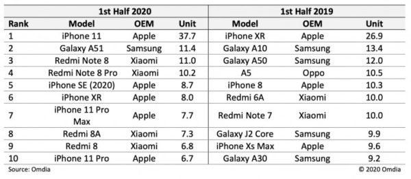

iPhone 11 ขึ้นแท่น “สมาร์ตโฟนขายดีที่สุด” ประจำครึ่งแรกของปี 2020
บริษัทวิเคราะห์ข้อมูล Omdia ได้รายงานว่า ในช่วงครึ่งแรกของปี 2020 ที่ผ่านมา (เป็นช่วงที่เกิดวิกฤติ COVD-19 แพร่ระบาดไปทั่วโลก) นั้น Apple ได้ประสบความสำเร็จในการจำหน่ายสมาร์ตโฟน โดย iPhone 11 นั้น ได้ขึ้นแท่นเป็นสมาร์ตโฟนที่มียอดจำหน่ายสูงสุดด้วยจำนวน 37.7 ล้านเครื่อง ซึ่งสูงกว่าที่ iPhone XR ทำได้เมื่อปี 2019 กว่า 10 ล้านเครื่อง
รองลงมาคือสมาร์ตโฟนระดับกลางอย่าง Samsung Galaxy A51 นั้น ตามมาห่าง ๆ อยู่ที่ 11.4 ล้านเครื่อง
ลำดับรองลงมาล้วนแล้วแต่เป็นสมาร์ตโฟนจาก Apple และ Xiaomi ด้วยกันทั้งสิ้น โดยสมาร์ตโฟนระดับกลางอย่าง Xiaomi Redmi Note 8 และ Note 8 Pro นั้น มียอดจำหน่าย อยู่ที่ 11 ล้านเครื่อง และ 10.2 ล้านเครื่อง ตามลำดับ
สำหรับสมาร์ตโฟนระดับเล็กรุ่นใหม่ของ Apple อย่าง iPhone SE (2020) ที่เพิ่งจะเริ่มวางจำหน่ายช่วงเดือนเมษายน – มิถุนายน 2020 ที่ผ่านมานั้น ก็มียอดจำหน่ายที่น่าประทับใจ อยู่ที่ 8.7 ล้านเครื่อง เลยทีเดียว
สะดุดตา! ยลโฉม Lamborghini Sian Roadster ที่มีคนจับภาพได้บนถนนที่อิตาลี
 Lamborghini Sian Roadster ใหม่ มันกลายเป็นรถที่ถูกจับตามองไปทั่วโลกด้วยความโดดเด่นของมัน อีกทั้งยังมีกำลังที่น่าเกรงขามกว่า 819 แรงม้าจากระบบส่งกำลังไฮบริด ไม่แปลกที่มันจะได้รับความสนใจจากผู้คนเมื่อมันอยู่บนท้องถนน
Lamborghini Sian Roadster ใหม่ มันกลายเป็นรถที่ถูกจับตามองไปทั่วโลกด้วยความโดดเด่นของมัน อีกทั้งยังมีกำลังที่น่าเกรงขามกว่า 819 แรงม้าจากระบบส่งกำลังไฮบริด ไม่แปลกที่มันจะได้รับความสนใจจากผู้คนเมื่อมันอยู่บนท้องถนน

นอกจากนี้ ยังสามารถมองเห็นไปถึงห้องโดยสารที่มาพร้อมเบาะสีอ่อนพร้อมเย็บสีน้ำเงินและคาร์บอนไฟเบอร์จำนวนมาก ในวิดีโอมันดูแตกต่างไปจากรถคันอื่นด้วยมุมเส้นสายที่คม มีรายละเอียดที่โดดเด่นเช่นไฟท้ายและช่องระบายอากาศคู่ ซึ่งมันถูกจับจ้องด้วยบุคคลภาพนอกมากมาย
ให้หายคิดถึง! Nissan รื้อภาพเก่าของตระกูล Z ตั้งแต่รุ่นพ่อมาให้ชม
แฟนๆของ Nissan ต่างท้อใจที่จะได้ยินข่าวล่าสุดเมื่อไม่กี่วันที่ผ่านมา ว่ารถตระกูล Z คันใหม่ ซึ่งคาดว่าจะมีชื่อว่า 400Z ถูกเลื่อนกำหนดการเปิดตัวออกไปจนถึงปลายปี 2022ล่าสุด ทางค่ายก็ได้รวบรวมภาพของรถตระกูล Z รุ่นก่อนๆ มาปลอบขวัญแฟนๆ เป็นหนึ่งในทีเซอร์ต้อนรับการกลับมาอีกครั้งของตระกูล Z
Nissan เพิ่งปล่อยทีเซอร์ใหม่ ที่ชื่อชุดว่า Nissan Z Proto ที่ปลุกกระแสกการกลับมาของรถคันใหม่ ที่มีกำหนดเปิดตัวเต็มรูปแบบในวันที่ 15 กันยายนเวลา 19.30 น.
ในคลิปวิดีโอแห่งความคิดถึง ทางค่ายพูดถึงความหลงใหลตลอด 50 ปี บนซีรีส์ของตระกูล Z ในอดีต ตั้งแต่ 240Z และ 300ZX ยอดนิยมซึ่งมาพร้อมกับเครื่องยนต์ V6 3.0 ลิตรเทอร์โบชาร์จคู่ ในต้นปี 1990